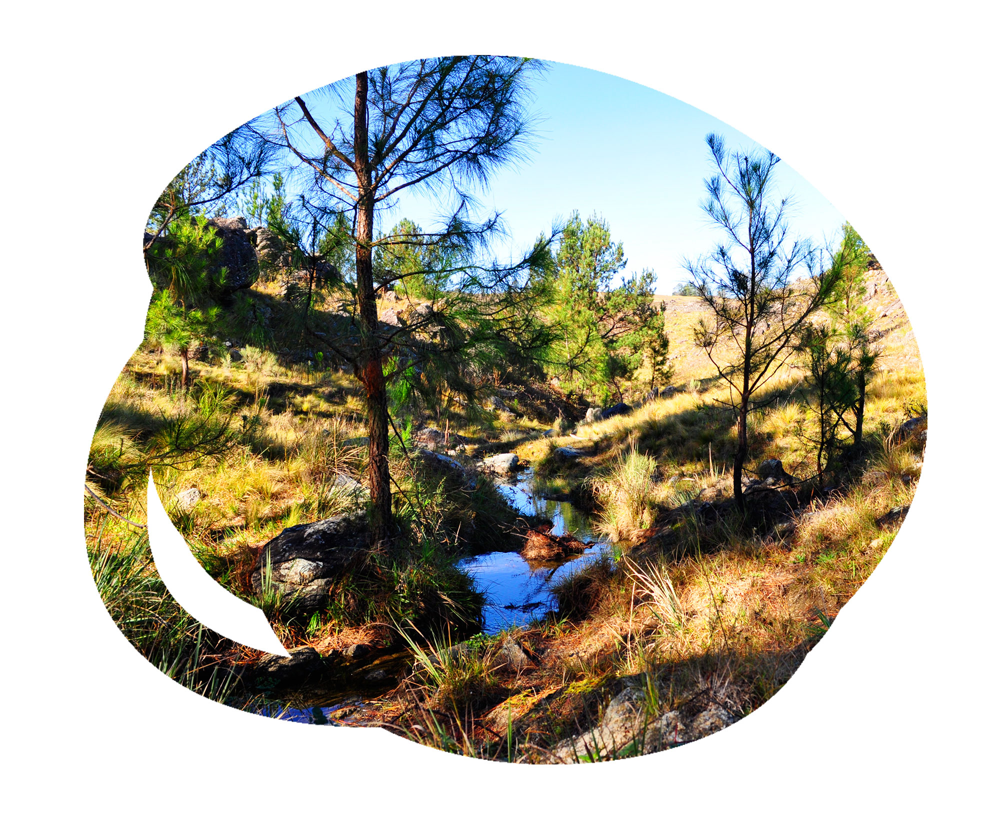

Loteo Natural
Juana Urbana es un loteo natural que respeta la topografía del entorno, ideal para compartir momentos especiales, alejado del trajín de la ciudad y conectado con los pequeños placeres de la vida, una invitación a redescubrir los sonidos de la naturaleza, a contemplar el paisaje, la pureza del aire, la nobleza del clima y la tranquilidad del lugar serrano.
19 lotes desde 10.000 mts a 40.000 mts cuadrados.
Escritura inmediata.
Arroyos y vertientes propias.

Imponentes visuales de 360 grados al Champaquí, Sierras Grandes, Valle de Calamuchita y Viña de Altura..

Cerca de los principales polos turísticos.
Acceso sobre ruta provincial s273, a 5km de Yacanto de Calamuchita con sentido a Athos Pampa.